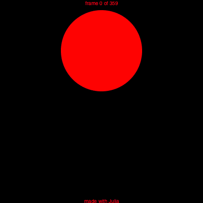
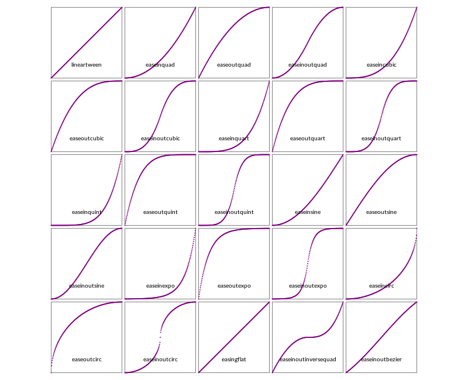
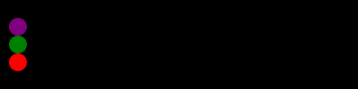
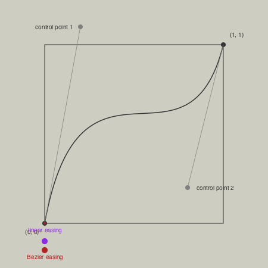

Animation helper functions
Javis.jl is the best way to make animated graphics with Julia.
Luxor provides some functions to help you create animations—at least, it provides some assistance in creating lots of individual frames that can later be stitched together to form a moving animation, such as a GIF or MP4.
There are four steps to creating an animation.
1 Use Movie to create a Movie object which determines the title and dimensions.
2 Define some functions that draw the graphics for specific frames.
3 Define one or more Scenes that call these functions for specific frames.
4 Call the animate(movie::Movie, scenes) function, passing in the scenes. This creates all the frames and saves them in a temporary directory. Optionally, you can ask for ffmpeg (if it's installed) to make an animated GIF for you.
Example
demo = Movie(400, 400, "test")
function backdrop(scene, framenumber)
background("black")
end
function frame(scene, framenumber)
sethue(Colors.HSV(framenumber, 1, 1))
eased_n = scene.easingfunction(framenumber, 0, 1, scene.framerange.stop)
circle(polar(100, -π/2 - (eased_n * 2π)), 80, :fill)
text(string("frame $framenumber of $(scene.framerange.stop)"),
Point(O.x, O.y-190),
halign=:center)
text(scene.opts,
boxbottomcenter(BoundingBox()),
halign=:center,
valign=:bottom)
end
animate(demo, [
Scene(demo, backdrop, 0:359),
Scene(demo, frame, 0:359,
easingfunction=easeinoutcubic,
optarg="made with Julia")
],
creategif=true)
In this example, the movie uses two scenes, each specifying a function to draw frames from 0 to 359. For each frame numbered 0 to 359, the graphics are drawn by both the backdrop and frame functions, in that order. A drawing is automatically created (in PNG format) and centered (origin) so you can start drawing immediately. The finish function is automatically called when all the drawing functions in the scenes have completed, and the process starts afresh for the next frame. The second scene, calling the frame function, shows how you can pass optional information to the function.
Making the animation
For best results, you'll have to learn how to use something like ffmpeg, with its hundreds of options, which include codec selection, framerate adjustment and color palette tweaking. The creategif option for the animate function makes an attempt at running ffmpeg and assumes that it's already installed. Inside animate, the first pass creates a GIF color palette, the second builds the file:
run(`ffmpeg -f image2 -i $(tempdirectory)/%10d.png -vf palettegen
-y $(seq.stitle)-palette.png`)
run(`ffmpeg -framerate 30 -f image2 -i $(tempdirectory)/%10d.png
-i $(seq.stitle)-palette.png -lavfi paletteuse -y /tmp/$(seq.stitle).gif`)Many movie editing programs, such as Final Cut Pro, will also let you import sequences of still images into a movie timeline.
If you want to use a custom ffmpeg command, you can use code such as this:
using Luxor, FFMPEG
...
tempdirectory = "/tmp/temp/"
animate(movie, [
Scene(movie, frame, 1:50)
], creategif=false, tempdirectory=tempdirectory)
FFMPEG.ffmpeg_exe(`-r 30 -f image2 -i $(tempdirectory)/%10d.png -c:v libx264 -r 30 -pix_fmt yuv420p -y /tmp/animation.mp4`)
Passing information to the frame() function
If you want to pass information to the frame function, such as an array of values, try these:
function frame(scene, framenumber, datapoints)
...
end
somedata = Datapoints[...]
animate(demo, [
Scene(demo, (s, f) -> frame(s, f, somedata),
0:100,
optarg=somedata)
],
creategif=true,
pathname="...")Animating paths
A useful function to help with animations is drawpath. This has a method that accepts a value between 0 and 1 that draws a portion of a Path object.
For example, the purple stroke is about half the length of the path.
fontsize(300)
textpath("s", O, halign=:center, valign=:middle)
s = storepath()
drawpath(s, action=:stroke)
sethue("purple")
setline(10)
setopacity(0.5)
pt = drawpath(s, 0.5, action=:stroke) # return final pt
setcolor("red")
circle(pt, 5, :fill);fill-opacity:1;stroke:none;"/>
<path style="fill:none;stroke-width:2;stroke-linecap:butt;stroke-linejoin:miter;stroke:rgb(0%25,0%25,0%25);stroke-opacity:1;stroke-miterlimit:10;" d="M 344.992188 75.871094 C 343.59375 78.277344 341.648438 79.480469 339.148438 79.480469 C 337.542969 79.480469 335.765625 78.929688 333.820312 77.824219 C 331.871094 76.722656 329.546875 75.496094 326.851562 74.152344 C 324.152344 72.800781 320.929688 71.574219 317.179688 70.480469 C 313.429688 69.378906 309 68.824219 303.898438 68.824219 C 299.59375 68.824219 295.695312 69.378906 292.195312 70.480469 C 288.695312 71.574219 285.71875 73.074219 283.273438 74.980469 C 280.824219 76.878906 278.921875 79.101562 277.570312 81.652344 C 276.226562 84.207031 275.554688 86.980469 275.554688 89.980469 C 275.554688 93.773438 276.679688 96.945312 278.929688 99.496094 C 281.179688 102.050781 284.125 104.253906 287.773438 106.105469 C 291.417969 107.949219 295.589844 109.601562 300.289062 111.058594 C 304.996094 112.507812 309.796875 114.035156 314.695312 115.636719 C 319.601562 117.230469 324.402344 119.054688 329.101562 121.105469 C 333.796875 123.148438 337.96875 125.667969 341.617188 128.667969 C 345.273438 131.667969 348.226562 135.347656 350.476562 139.699219 C 352.726562 144.054688 353.851562 149.277344 353.851562 155.371094 C 353.851562 162.476562 352.574219 169.027344 350.023438 175.027344 C 347.46875 181.027344 343.71875 186.230469 338.773438 190.636719 C 333.824219 195.035156 327.746094 198.480469 320.539062 200.980469 C 313.339844 203.480469 305.042969 204.730469 295.648438 204.730469 C 285.042969 204.730469 275.367188 202.980469 266.617188 199.480469 C 257.867188 195.980469 250.492188 191.527344 244.492188 186.121094 L 251.101562 175.324219 C 251.902344 173.929688 252.902344 172.855469 254.101562 172.105469 C 255.296875 171.355469 256.796875 170.980469 258.601562 170.980469 C 260.496094 170.980469 262.445312 171.679688 264.445312 173.074219 C 266.445312 174.472656 268.867188 175.996094 271.710938 177.652344 C 274.5625 179.300781 278.015625 180.824219 282.070312 182.230469 C 286.121094 183.628906 291.148438 184.324219 297.148438 184.324219 C 302.25 184.324219 306.679688 183.675781 310.429688 182.371094 C 314.179688 181.070312 317.304688 179.347656 319.804688 177.199219 C 322.304688 175.054688 324.152344 172.535156 325.351562 169.636719 C 326.546875 166.730469 327.148438 163.679688 327.148438 160.480469 C 327.148438 156.378906 326.023438 152.976562 323.773438 150.277344 C 321.523438 147.582031 318.570312 145.285156 314.914062 143.386719 C 311.265625 141.480469 307.09375 139.832031 302.398438 138.433594 C 297.699219 137.027344 292.871094 135.527344 287.914062 133.933594 C 282.964844 132.332031 278.140625 130.503906 273.445312 128.449219 C 268.746094 126.398438 264.570312 123.773438 260.914062 120.574219 C 257.265625 117.378906 254.320312 113.503906 252.070312 108.949219 C 249.820312 104.398438 248.695312 98.824219 248.695312 92.230469 C 248.695312 86.324219 249.890625 80.675781 252.289062 75.277344 C 254.695312 69.871094 258.21875 65.121094 262.867188 61.027344 C 267.523438 56.925781 273.246094 53.675781 280.039062 51.277344 C 286.839844 48.871094 294.59375 47.667969 303.304688 47.667969 C 313.304688 47.667969 322.375 49.246094 330.523438 52.402344 C 338.667969 55.550781 345.59375 59.925781 351.304688 65.527344 Z M 365.101562 202.324219 "/>
<path style="fill:none;stroke-width:10;stroke-linecap:butt;stroke-linejoin:miter;stroke:rgb(50.196078%25,0%25,50.196078%25);stroke-opacity:0.5;stroke-miterlimit:10;" d="M 344.992188 75.871094 C 343.59375 78.277344 341.648438 79.480469 339.148438 79.480469 C 337.542969 79.480469 335.765625 78.929688 333.820312 77.824219 C 331.871094 76.722656 329.546875 75.496094 326.851562 74.152344 C 324.152344 72.800781 320.929688 71.574219 317.179688 70.480469 C 313.429688 69.378906 309 68.824219 303.898438 68.824219 C 299.59375 68.824219 295.695312 69.378906 292.195312 70.480469 C 288.695312 71.574219 285.71875 73.074219 283.273438 74.980469 C 280.824219 76.878906 278.921875 79.101562 277.570312 81.652344 C 276.226562 84.207031 275.554688 86.980469 275.554688 89.980469 C 275.554688 93.773438 276.679688 96.945312 278.929688 99.496094 C 281.179688 102.050781 284.125 104.253906 287.773438 106.105469 C 291.417969 107.949219 295.589844 109.601562 300.289062 111.058594 C 304.996094 112.507812 309.796875 114.035156 314.695312 115.636719 C 319.601562 117.230469 324.402344 119.054688 329.101562 121.105469 C 333.796875 123.148438 337.96875 125.667969 341.617188 128.667969 C 345.273438 131.667969 348.226562 135.347656 350.476562 139.699219 C 352.726562 144.054688 353.851562 149.277344 353.851562 155.371094 C 353.851562 162.476562 352.574219 169.027344 350.023438 175.027344 C 347.46875 181.027344 343.71875 186.230469 338.773438 190.636719 C 333.824219 195.035156 327.746094 198.480469 320.539062 200.980469 C 313.339844 203.480469 305.042969 204.730469 295.648438 204.730469 C 285.042969 204.730469 275.367188 202.980469 266.617188 199.480469 C 257.867188 195.980469 250.492188 191.527344 244.492188 186.121094 L 251.101562 175.324219 C 251.101562 175.320312 251.105469 175.320312 251.105469 175.316406 "/>
<path style=" stroke:none;fill-rule:nonzero;fill:rgb(100%25,0%25,0%25);fill-opacity:1;" d="M 256.105469 175.316406 C 256.105469 181.984375 246.105469 181.984375 246.105469 175.316406 C 246.105469 168.648438 256.105469 168.648438 256.105469 175.316406 "/>
</g>
</svg>)
It's also useful for animating text paths.

which uses code like this:
...
f = # a value between 0 and 1
textpath("Thank you for using", pt, halign=:center)
tp = storepath()
drawpath(tp, f, :stroke)
...Easing functions
Transitions for animations often use non-constant and non-linear motions, and these are usually provided by easing functions. Luxor defines some of the basic easing functions and they're listed in the (unexported) array Luxor.easingfunctions. Each scene can have one easing function.
| List of easing functions |
|---|
| easingflat |
| lineartween |
| easeinquad |
| easeoutquad |
| easeinoutquad |
| easeincubic |
| easeoutcubic |
| easeinoutcubic |
| easeinquart |
| easeoutquart |
| easeinoutquart |
| easeinquint |
| easeoutquint |
| easeinoutquint |
| easeinsine |
| easeoutsine |
| easeinoutsine |
| easeinexpo |
| easeoutexpo |
| easeinoutexpo |
| easeincirc |
| easeoutcirc |
| easeinoutcirc |
| easeinoutinversequad |
| easeinoutbezier |
Most easing functions have names constructed like this:
ease[in|out|inout][expo|circ|quad|cubic|quart|quint]and there's an easingflat linear transition.
function draweasingfunction(f, pos, w, h)
@layer begin
translate(pos)
setline(0.5)
sethue("black")
box(O, w, h, :stroke)
sethue("purple")
for i in 0:0.005:1.0
circle(Point(-w/2, h/2) + Point(w * i, -f(i, 0, h, 1)), 1, :fill)
end
sethue("black")
text(replace(string(f), "Luxor." => ""), Point(0, h/2 - 20), halign=:center)
end
end
t = Tiler(650, 650, 5, 5)
margin=5
fontsize(10)
fontface("JuliaMono-Regular")
for (pos, n) in t
n > length(Luxor.easingfunctions) && continue
draweasingfunction(Luxor.easingfunctions[n], pos,
t.tilewidth-margin, t.tileheight-margin)
endIn these graphs, the horizontal axis is time (between 0 and 1), and the vertical axis is the parameter value (between 0 and 1).

One way to use an easing function in a frame-making function is like this:
function moveobject(scene, framenumber)
background("white")
...
easedframenumber = scene.easingfunction(framenumber, 0, 1, scene.framerange.stop)
...This takes the current frame number, compares it with the end frame number of the scene, then adjusts it.
In the next example, the purple dot has sinusoidal easing motion, the green has cubic, and the red has quintic. They all traverse the drawing in the same time, but have different accelerations and decelerations.

fastandfurious = Movie(400, 100, "easingtests")
backdrop(scene, framenumber) = background("black")
function frame1(scene, framenumber)
sethue("purple")
eased_n = scene.easingfunction(framenumber, 0, 1, scene.framerange.stop)
circle(Point(-180 + (360 * eased_n), -20), 10, :fill)
end
function frame2(scene, framenumber)
sethue("green")
eased_n = scene.easingfunction(framenumber, 0, 1, scene.framerange.stop)
circle(Point(-180 + (360 * eased_n), 0), 10, :fill)
end
function frame3(scene, framenumber)
sethue("red")
eased_n = scene.easingfunction(framenumber, 0, 1, scene.framerange.stop)
circle(Point(-180 + (360 * eased_n), 20), 10, :fill)
end
animate(fastandfurious, [
Scene(fastandfurious, backdrop, 0:200),
Scene(fastandfurious, frame1, 0:200, easingfunction=easeinsine),
Scene(fastandfurious, frame2, 0:200, easingfunction=easeinoutcubic),
Scene(fastandfurious, frame3, 0:200, easingfunction=easeinoutquint)
],
creategif=true)Here's the definition of one of the easing functions:
function easeoutquad(t, b, c, d)
t /= d
return -c * t * (t - 2) + b
endHere:
tis the current time (framenumber) of the transitionbis the beginning value of the propertycis the change between the beginning and destination value of the propertydis the total length of the transition
The easeinoutbezier function accepts two additional arguments, two normalized control points of a normalized Bezier curve from Point(0, 0) to Point(1, 1). You can use these to define the shape of a custom easing transition. The Bezier curve's y coordinate determines the acceleration. [?]
